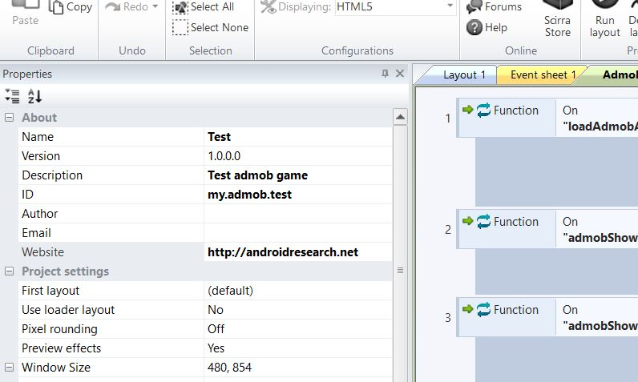
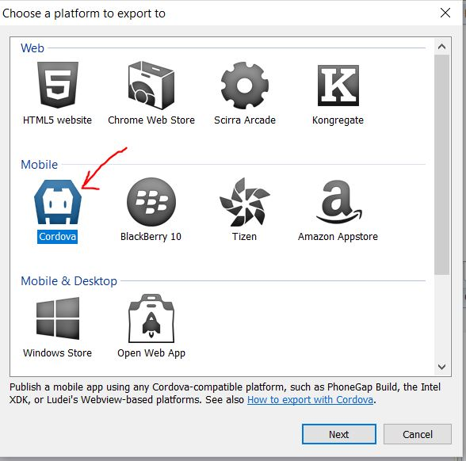
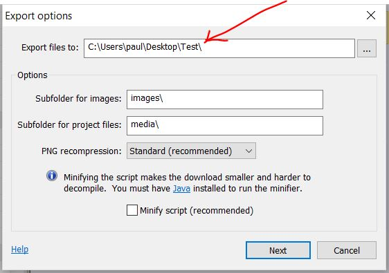
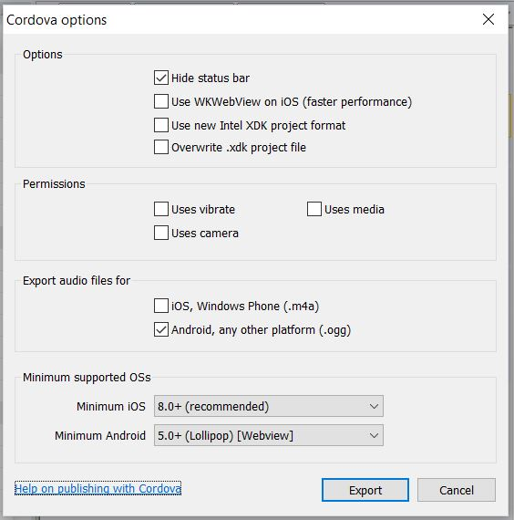
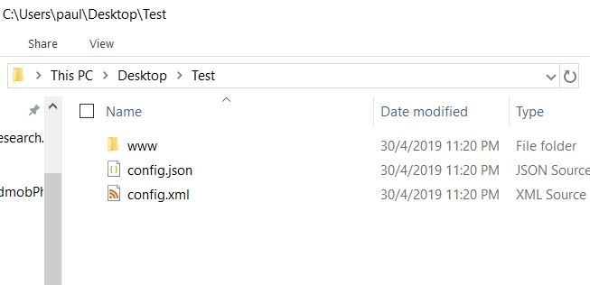
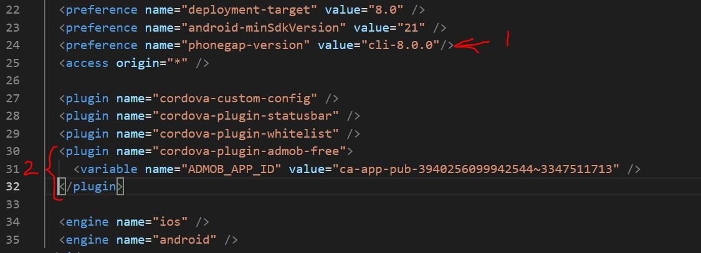

In this chapter, we will learn how to export our project as a Cordova project and then configure it for building an apk file.
Go to your project settings and fill in the Name, Version, Description and ID as shown in Fig 6-1 below.

Then export your game and select Cordova as shown in Fig 6- 2 below.

Then select a location for the export as shown in Fig 6-3 below.

Do not Minify script. Just click the button Next. You will then see the Cordova export settings as shown in Fig 6-4 below. Make sure your settings is exactly as show. Then click on the button ‘Export’.

After exporting the project, open the exported folder and you should see the files and folders as shown in Fig 6-5 below. In this case the exported folder is called Test. Go ahead and delete the config.json file.

Then, edit the config.xml file using any text or code editor as shown in Fig 6-6 below. Add these two lines:
<preference name="phonegap-version" value="cli-8.0.0"/>
<plugin name="cordova-plugin-admob-free"><variable name="ADMOB_APP_ID" value="ca-app-pub- 3940256099942544~3347511713" /></plugin>
in the correct places as shown in Fig 6-6 as indicated by the red labels 1 and 2.

Note that the App ID is given by Google Admob for testing purposes. You can refer to this page:
bit.ly/2V1Dbwv
You will also need to create 2 icons sized 256 x 256 and 128 x 128 pixels called icon-256.png and icon-128.png and replace those in the www folder. For purposes of this chapter, you can use mine :
bit.ly/2Vfd9KX (icon-128.png)
bit.ly/2PLZQvR (icon-256.png)
Now you are ready to upload to github. We will do that in the next chapter.